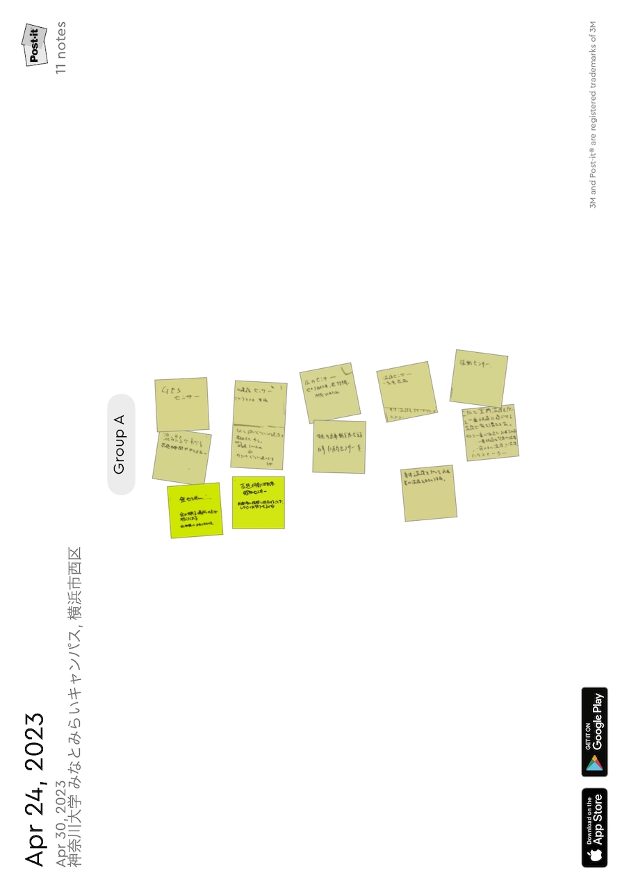
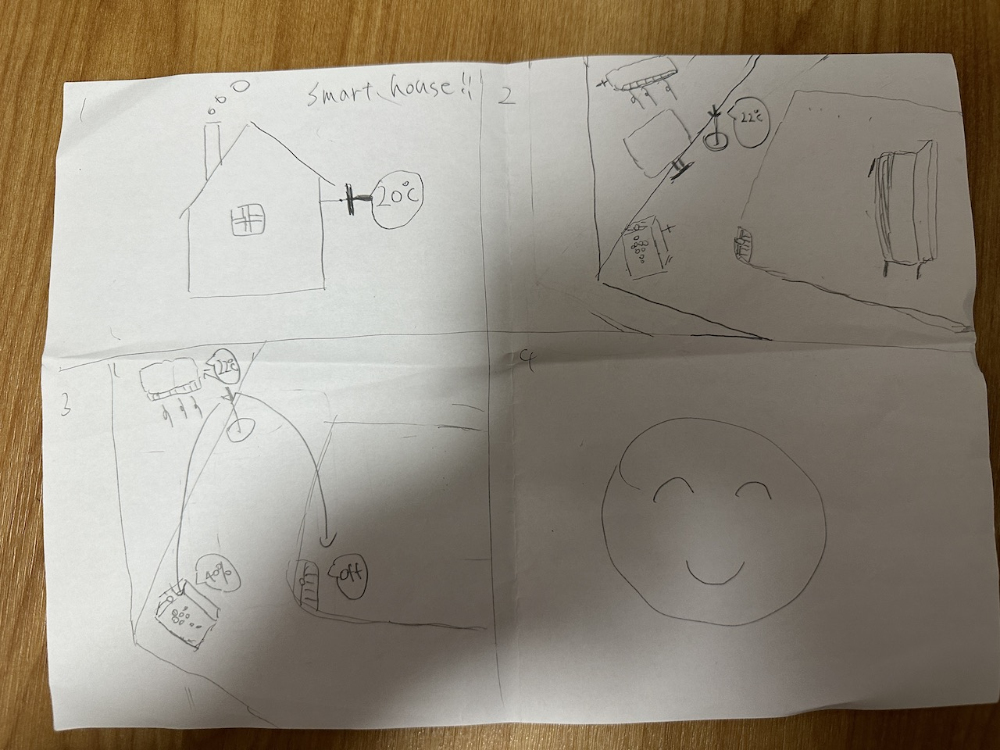

第二回
グループワークした内容（ポストイット画像）

今回の課題は前回や前々回よりも一段と難しく、なかなか骨のある課題だった。最初のセンサーを見つけるところまではchatgptに聞いてどうにかなった。
だが、その後のビジネスを考えるところで行き詰まってしまいなかなか良案が出なかった。普段の生活に落とし込めればもう少し案が出せたかなと思った。
自分で考えたアイディア（スケッチ）

スマートホームならぬスマートハウス。室内の温度、湿度、気圧を計測してその日を一番快適に過ごせる温度と湿度にしてくれる家。
リビングだけでなく、風呂であったら一番快適なお風呂の温度にしてくれる。また寝室であったら一番寝やすい温度と湿度にしてくれる。
このように季節を忘れてしまうほど快適な家、いつでも快適な温度、湿度、気圧。これがスマートハウスだ！！